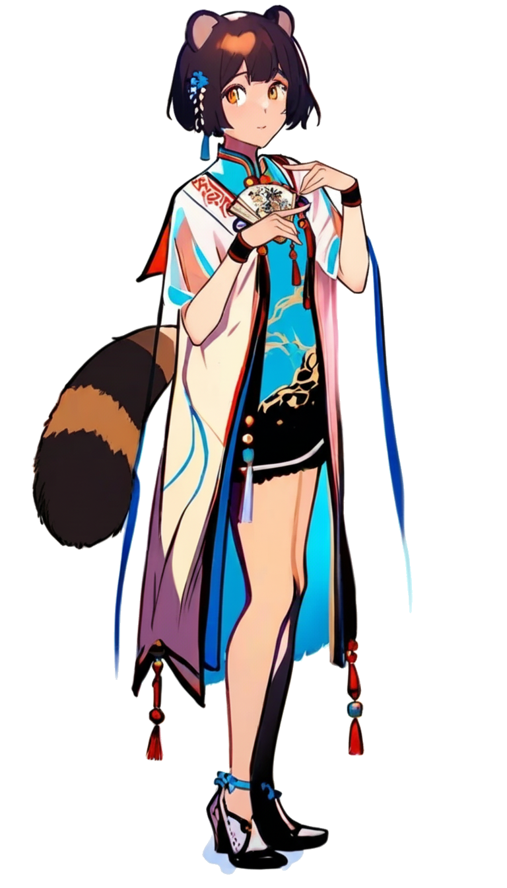

性格
軽妙で人当たりが良い。初対面の相手にもすぐ馴染める柔軟さを持つ一方、内心では誰に対しても一定の距離を置いている。信頼という言葉を信じず、情報と利益でしか人間関係を測らない冷徹さがある。とはいえ、心の底では孤独を抱えており、たまに不用意に誰かへ甘えたくなる衝動を隠している。
仕事について
表向きは街角の小さな喫茶店を営んでおり、客の会話を拾っては情報に変えるのが日常業務。裏では密偵や盗聴、買収など手段を選ばずに情報を集め、赤組へと還元する役割を担う。風狸族特有の嗅覚と耳の良さを活かし、音や匂いから人間関係や心理を察知することができる。
そのため、彼女の周囲では「秘密を隠せる人間はいない」と恐れられている。
過去
風狸族として生まれたが、人間社会で暮らすために幼少期から耳と尻尾を隠して生きてきた。差別や偏見を受けることを避けるため、種族のことを誰にも明かさず、むしろ「普通の人間」として周囲に溶け込むことを徹底した。その過程で、他者の心を読む術や、隠し事を見抜く嗅覚を培っていった。暗黒中華街に流れ着いたのち、自分の技能が「武器」として通用することを知り、赤組の一員となる。
能力
風狸族特有の鋭敏な聴覚と嗅覚を持ち、わずかな感情の変化や体臭から相手の心理を察知できる。また、人間観察に優れており、相手の仕草や言葉から虚偽を見抜くことに長けている。直接的な戦闘力は低いが、逃走と隠密行動には優れており、危険を察知して素早く身をかわす。